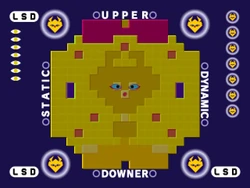
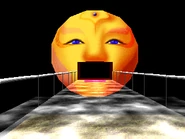
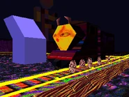
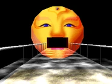
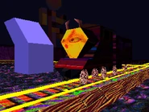
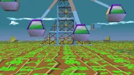
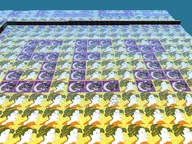
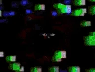
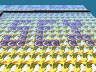
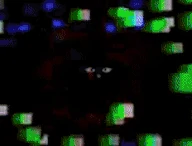

Shrine Dedicated to:
LSD: Dream Emulator





LSD: Dream Emulator is a fully gameified rendition of complete surrealism (and potentially madness)
A dream diary kept by Hiroko Nishikawa, expanded on for over a decade, LSD (Lovely Sweet Dream) inspired Osamu Sato, who then directed the development of LSD: Dream Emulator.
Needless to say, LSD is masterful and original in its use of imagery and surrealism. It is the most active demonstration of surrealism that you can find. I cannot recommend it enough.
LSD is DADA
If YOU are interested in playing LSD for yourself, you can find instructions and downloads
here.




